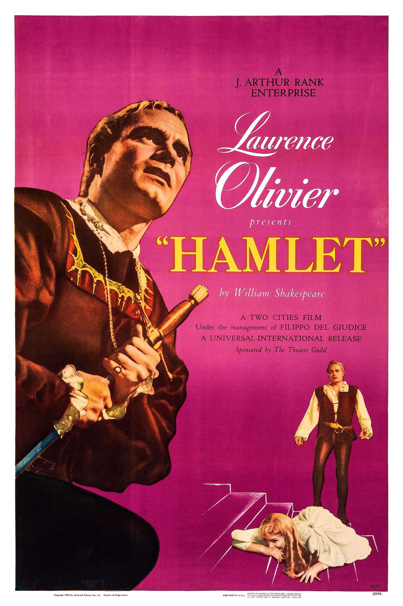

Hamlet
21st Academy Awards
(Oscars 1949)
7 Nominations, 4 Awards
| Nominations | ||
|---|---|---|
| Category | Nominees | Result |
| Best Motion Picture | J. Arthur Rank-Two Cities Films | Won |
| Actor | Laurence Olivier | Won |
| Actress in a Supporting Role | Jean Simmons | Nominated |
| Directing | Laurence Olivier | Nominated |
| Art Direction (Black-and-White) | Carmen Dillon and Roger K. Furse | Won |
| Costume Design (Black-and-White) | Roger K. Furse | Won |
| Music (Music Score of a Dramatic or Comedy Picture) | William Walton | Nominated |